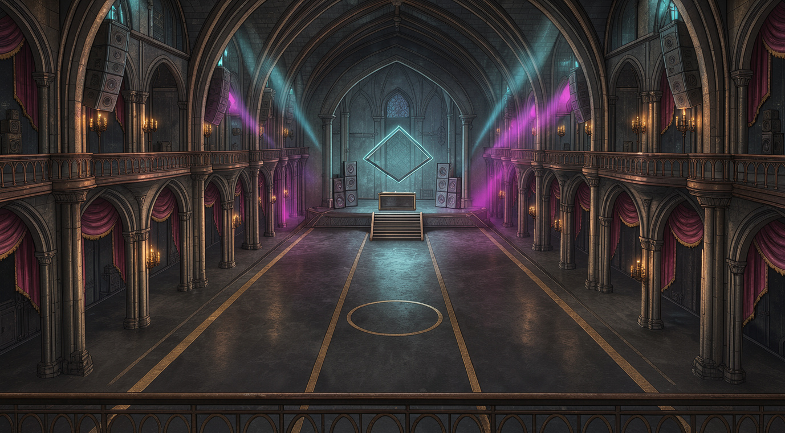
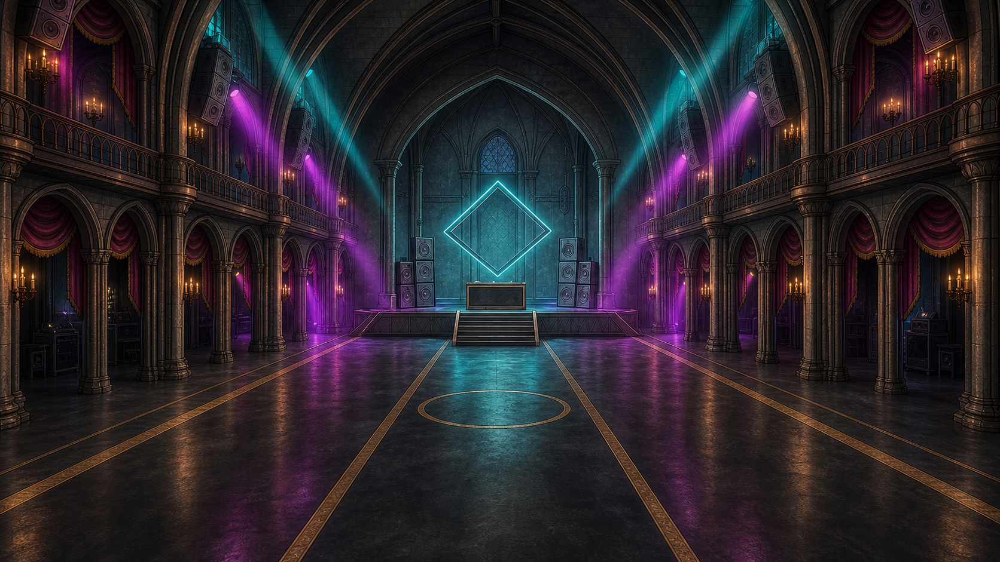
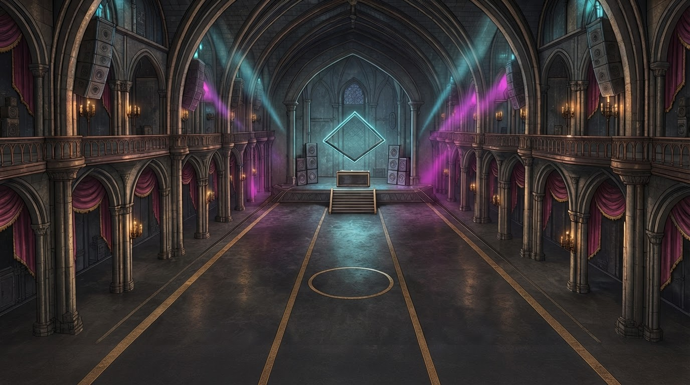

Originales históricos preservados


No aprobadas y no integradas. BG06 se parece demasiado a BG04; las imágenes no demuestran geometría compartida ni nivel industrial/actividad suficiente. No cumplen todavía todos los criterios de aceptación.
Informe de producción y limitaciones · Planta y tres vistas conceptuales 08C2.4 · Alternativas 08C2.3
Propuestas de referencia compartida, no renders de un modelo 3D único. El aro es solo decoración de suelo. No son 16:9 exactos ni 2560 × 1440.



La planta 08C2.4 y sus tres proyecciones son la referencia común, no una prueba de que estos PNG se hayan renderizado desde ella. Banda, aro, escalera, cabina, torres, columnas y balcones se repiten como intenciones. Cantidad y posición de módulos, altura de cámara y fuentes de luz no están verificados; predominan arcos y cortinas catedralicios. No se añadió público ni se probó sprite o logo oficial.
Recorte central a 16:9 y ampliación Lanczos: no son ilustraciones nativas de 2560 × 1440 ni recuperan detalle. Datos exactos en el informe.
No integrar ni dar por aprobados estos fondos hasta revisión humana y resolución de las limitaciones.